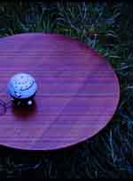

ひろったちゃぶ台
毎日を楽しく暮らしたい。ひとつひとつをていねいに生きたい。大好きなモノに囲まれて生活したい。そんな気持ちがいつも私の中にあります。だから古いモノに惹かれたり、懐かしくてやさしいモノを集めているのだと思います。
部屋にいる時は、ちゃぶ台の前であぐらをかいています。今の私にとっての至福の時ですが、子供の頃には考えられなかったことです。だって、すぐさま「行儀が悪い」という祖母の言葉と、ピシッと手が飛んできたからです。幼少の頃は台所の中心にちゃぶ台があって、家族でそろってごはんを食べていました。あぐらなんてとんでもないし、食事中にテレビを見るなんてもってのほか。裸電球の下でもくもくと食事をしていたのです。なのに、つくづく経験が活かされていないなぁと、あぐら姿の自分に苦笑しつつ、結局私は楽さをとってしまったのでした。
目の前に広がる直径九十センチの茶色い空間は、使い込まれてピカピカと輝いています。私が使いこんだわけではありません。私の前にどこかの家で活躍していたのです。けれど、このちゃぶ台にはかわいそうな過去がありました。
実はここだけの話ですが、捨てられていたのです。それも原っぱに。
平成二年のある日、骨董市の帰り道で、ちゃぶ台が草の中から私を見ていたのです。これは「運命の出会い」でした。なぜなら、当時は古い家具を買ったばかりで、部屋中を古いモノで統一したいとムキになっていました。当然、欲しいモノのひとつにちゃぶ台もあったのです。けれど、簡単に見つかると思っていたちゃぶ台は、なかなか手に入りませんでした。あっても脚がギシギシしていたり、低くすぎたり、どこかピンときません。
そんな時に、この不思議な出会いです。近寄って見てみると、雨ざらしのわりには状態がよく、木も反っておらず、重たいガッシリとしたモノです。骨董市で売っていてもおかしくありません。裏返しに置かれていたので、裏面は陽にさらされたり、雨に打たれたりして、少々色あせていますが、表面はとてもきれいで、使うには問題なさそうです。
とにかく「これを縁といわずして何といおう」と思い、つれて帰ることにしました。しかし、なんと持ちづらく、重たいことか。何度も休憩しながら汗だくになって、数キロある道程をつれて帰りました。
家にたどりつくと、さっそくお風呂場できれいに洗い、水気を十分にとって部屋の中心に置いてみました。とてもよく似合います。さっきまで原っぱにいたなんて思えません。以前から使っていたようで、違和感がまったくないのです。わが家にいる古い家具はもちろんのこと、古いモノたちともすぐになかよくなりました。
フト、ちゃぶ台が使われるようになったのは、いったいいつ頃なのかなぁと思いました。
小泉和子さんが書かれた『台所道具いまむかし』（平凡社）によると、明治時代の半ば頃から、少しずつ一般家庭で使われるようになったそうです。ちゃぶ台は、文明開化により西洋文化がはいってきた時に、一緒にやってきた腰掛け用のテーブルを真似つつも、座って使用できるように工夫された和洋折衷の家具だったのです。
ちゃぶ台が使われるようになる以前は、箱膳や銘々膳と呼ばれた、一人一人が別々のお膳で食べていました。銘々膳はお膳の高さによって、身分位階が表現されていたそうです。格式があったのですね。ちゃぶ台が銘々膳とくらべてかたずけの手間が少ないこと、家族が向きあって食事ができるということから、大正デモクラシーの時代に、身分とか位とかいう格式を取り払った、一家平等を象徴する民主主義の家具として、庶民の中に普及していったそうです。
ちゃぶ台に、そんな歴史があったなんて……。
日本の歴史を語ることができる家具だったのですね。ちゃぶ台を通して、ますます古いモノに興味がわいてきました。
考えてみると、私が少しずつ骨董市や骨董屋さん、古道具屋さんから集めてきたモノたちは、ちゃぶ台と同じく文明開化以降につくられたモノばかりです。西洋に追いつけとばかりにつくられた、和洋折衷のモノもけっこうあります。そんなモノたちを見ていると、人にもそれぞれの歴史があるように、モノにも歴史があるという当たり前のことに気がつきました。どんなに古くさく思えるモノでも、人々の生活をよりよくしようという願いから生まれてきたのです。
そんなモノたちをちゃぶ台にのせてみました。古ぼけた色合いの、あったかみのあるモノたちは何もいいませんが、毎日せかせかと気ぜわしい私の心を、やさしく包みこんでくれます。私は楽しい気持ちになって、モノたちが生まれた時代のこと、生活のことなど、ちゃぶ台と一緒に考えていくのです。ますます夢が広がっていくようです。